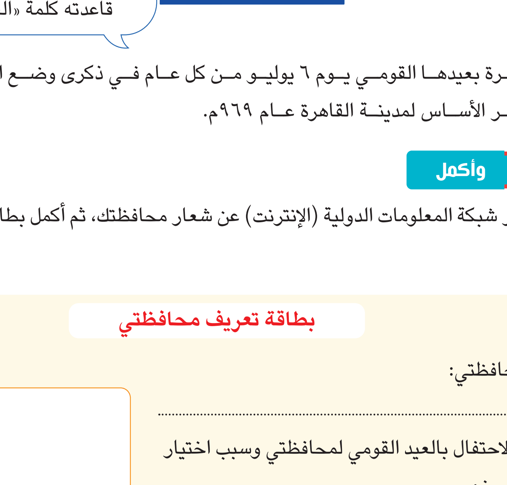

الوحدة الثانية: مدينتنا وحياتنا اليومية • الجزء الثالث
المحافظة: هي مساحة من الأرض تضم مجموعة من المراكز أو الأحياء، ولكل محافظة حدود إدارية تفصلها عن جيرانها.
ويبلغ عدد محافظات جمهورية مصر العربية (27 محافظة) تنقسم بحسب موقعها الجغرافي إلى 3 مجموعات رئيسية.

| المجموعة الجغرافية | العدد | أسماء المحافظات التابعة لها |
|---|---|---|
| 1- محافظات الوجه البحري | 13 | القاهرة، الإسكندرية، البحيرة، كفر الشيخ، الغربية، المنوفية، القليوبية، الشرقية، الدقهلية، دمياط، بورسعيد، الإسماعيلية، السويس. |
| 2- محافظات الوجه القبلي | 9 | الجيزة، الفيوم، بني سويف، المنيا، أسيوط، سوهاج، قنا، الأقصر، أسوان. |
| 3- محافظات الحدود الصحراوية | 5 | مطروح، الوادي الجديد (أكبر محافظات مصر مساحة)، البحر الأحمر، شمال سيناء، جنوب سيناء. |
تُعد مدينة القاهرة من أقدم وأعرق العواصم في العالم؛ بناها القائد جوهر الصقلي عام 969م. وتم اختيارها عاصمة لأسباب استراتيجية هامة:
- موقعها المركزي: نقطة التقاء وربط حيوية بين الوجه البحري والوجه القبلي.
- المركز السياسي والتجاري: تتجمع فيها مقار الوزارات، مجلس النواب، السفارات، والبنوك والمؤسسات الكبرى.
- المركز الثقافي والتراثي: تضم مئات المعالم التاريخية كقلعة صلاح الدين، والجامع الأزهر، والكنائس الأثرية.

| عنصر الشعار | الدلالة والرمزية التاريخية والدينية |
|---|---|
| الجامع الأزهر الشريف | منارة العلم والإسلام في العالم، ويشير إلى مكانة القاهرة التاريخية والإسلامية. |
| قاعدة الجامع (مكتوب عليها: القاهرة) | اسم العاصمة التاريخية ليعبر عن ثباتها وأصالتها. |
| الشمس الساطعة خلف الجامع | ترمز إلى أن الأزهر الشريف هو منارة العلم التي تشع نور الهداية والمعرفة على العالم أجمع. |
( أ- 25 محافظة | ب- 27 محافظة | جـ- 30 محافظة | د- 20 محافظة )
( أ- الوادي الجديد | ب- الغربية | جـ- القليوبية | د- سوهاج )
( أ- جامع محمد علي | ب- الجامع الأزهر الشريف | جـ- مسجد الرفاعي | د- مسجد الحسين )
( أ- موقعها المركزي بين الدلتا والصعيد | ب- كثرة مصانعها فقط | جـ- بعدها عن النيل | د- مساحتها الصغيرة )
( أ- افتتاح قناة السويس | ب- وضع حجر أساس بنائها عام 969م | جـ- نصر أكتوبر | د- بناء السد العالي )
( مطروح - أسوان - الشرقية - بورسعيد - سوهاج - الوادي الجديد )
| محافظات الوجه البحري | محافظات الوجه القبلي | محافظات الحدود الصحراوية |
|---|---|---|
| .................................................. | .................................................. | .................................................. |
الإجابة: ................................................................................................................................................................................
الإجابة: ................................................................................................................................................................................
1- المحافظة (وحدة إدارية جغرافية تضم أحياء ومراكز).
2- الحدود الإدارية (الحدود الداخلية الفاصلة بين المحافظات).
3- مدينة القاهرة (العاصمة المركزية لمصر ومركز الحكم والإدارة).
4- محافظة الوادي الجديد (أكبر محافظات مصر وتبلغ أكثر من 40% من مساحة الدولة).
5- الشعار (راية تعبر عن هوية المحافظة وتاريخها ونشاط أهلها).
(1) ب- 27 محافظة | إجمالي عدد المحافظات في التقسيم الإداري الرسمي.
(2) أ- الوادي الجديد | تقع على الحدود الغربية الجنوبية مع ليبيا والسودان.
(3) ب- الجامع الأزهر الشريف | المنارة الدينية والعلمية الشامخة في قلب القاهرة.
(4) أ- موقعها المركزي بين الدلتا والصعيد | موقع فريد يربط كافة أقاليم مصر براً ونهرياً.
(5) ب- وضع حجر أساس بنائها عام 969م | على يد القائد جوهر الصقلي في العصر الفاطمي.
(1) ( ✗ ) خطأ. التصويب: محافظة الإسكندرية من محافظات الوجه البحري الساحلية.
(2) ( ✓ ) صواب. ترمز لنور العلم والوسطية الذي يضيء به الأزهر العالم.
(3) ( ✗ ) خطأ. التصويب: الحدود الإدارية هي التي تفصل بين المحافظات، بينما الحدود الدولية تفصل بين الدول.
(4) ( ✓ ) صواب. مطروح، الوادي الجديد، البحر الأحمر، شمال سيناء، جنوب سيناء.
(5) ( ✓ ) صواب. لتخفيف الازدحام ونقل الوزارات والهيئات الحكومية لمدينة ذكية عصرية.
السؤال الرابع (التصنيف):
• الوجه البحري: الشرقية - بورسعيد.
• الوجه القبلي: أسوان - سوهاج.
• الحدود الصحراوية: مطروح - الوادي الجديد.
السؤال الخامس (بم تفسر):
(1) بسبب موقعها الجغرافي المركزي المتميز كنقطة التقاء بين الوجهين البحري والقبلي، ولكونها مركزاً سياسياً واقتصادياً وثقافياً حيوياً.
(2) ليدل على أن الجامع الأزهر الشريف هو منارة الإسلام وقبلة العلم التي تشع نور المعرفة والهداية على العالم الإسلامي والعالم بأسره.